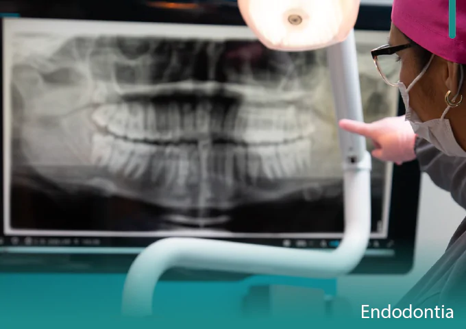

Endodontia
Cárie profunda, fraturas ou algum tipo de dano ao dente, podem evoluir para uma inflamação ou até uma infecção da polpa dentária, que é a estrutura que proporciona sensibilidade ao dente. Nesses casos costuma-se sentir dor e forte desconforto.

Dúvidas mais comuns sobre endodontia
Quais são os sinais e sintomas que indicam a necessidade do tratamento de canal?
Dor de dente que pode durar horas, muita sensibilidade à variação de temperatura, quente e frio, dor pulsátil, dor irradiada para outros dentes, não sendo possível definir em qual dente exato está a dor, tamanha a intensidade.
Toda dor de dente indica a necessidade de tratamento de canal?
Não, a inflamação da polpa, popularmente conhecida como dor de dente, pode ser classificada como reversível e irreversível. A reversível é caracterizada por uma dor de curta duração que se dissipa após a remoção do estímulo. Ela também é caracterizada por sensibilidade apenas às temperaturas frias e pode ser considerada uma dor localizada. Esse tipo de dor diminui quando removido o agente agressor, no caso, a cárie. Portanto, esses casos não necessitam do tratamento de canal. Mas, se essa dor não for tratada, pode evoluir para uma inflamação irreversível e para este caso, o tratamento endodôntico é indicado.
Em quantas sessões é feito o tratamento de canal?
O número de sessões para o tratamento de canal depende do estado do dente. Se o dente não estiver infectado, uma sessão de tratamento é suficiente. Em casos de infecções maiores, duas ou mais sessões podem ser necessárias para promover uma boa limpeza e descontaminação da câmara pulpar.
E se o tratamento de canal não for realizado?
Dor de dente que pode durar horas, muita sensibilidade à variação de temperatura, quente e frio, dor pulsátil, dor irradiada para outros dentes, não sendo possível definir em qual dente exato está a dor, tamanha a intensidade.
Quais são os sinais e sintomas que indicam a necessidade do tratamento de canal?
Se o tratamento de canal não for realizado, a necrose da polpa pode se estender para a região do ápice, região final da raiz do dente, podendo ocasionar reabsorção óssea, formação de granulomas e cistos, além de afetar outros dentes adjacentes. Consequências mais graves, como uma bacteremia, presença de bactérias na corrente sanguínea, são raras, mas podem ocorrer.
Agende sua avaliação e entenda qual a melhor solução para o seu caso.
Se você perdeu um ou mais dentes e quer voltar a sorrir com mais segurança, fale com a equipe da Qualimplan no Capão Redondo e agende sua avaliação individualizada.